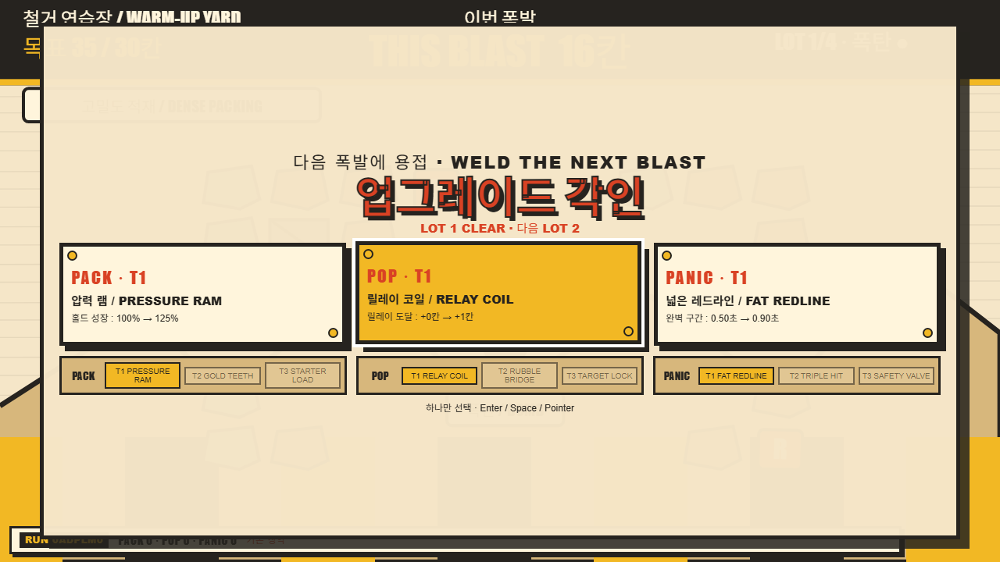
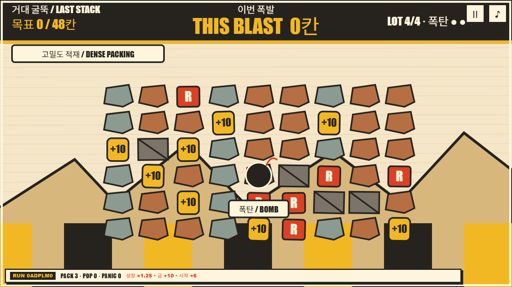
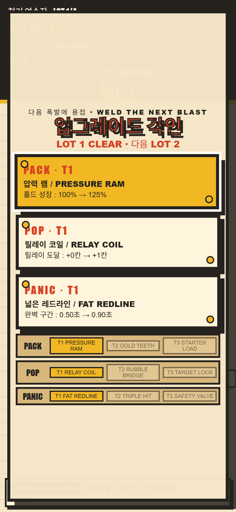

준비 크기
PACK은 같은 blast machine이 압축해 준비할 수 있는 size를 키웁니다. T1 → T2 → T3가 순서대로 이어집니다.
GAME 01 HOLD → THIS BLAST → RELEASE
핵심 루프는 그대로입니다. HOLD로 화면의 고철을 하나의 authoritative THIS BLAST에 압축하고, 숫자가 얼어붙은 뒤 RELEASE하면 그 약속만큼 sequential chain explosion이 이어집니다. v1.1.0은 그 한 번의 폭발 위에 런 빌드를 올립니다.
PLAY NOW v1.1.0
01 / ONE CAUSAL LOOP
HOLD pointer/Space로 준비하는 동안 보이는 수치가 단 하나의 authoritative THIS BLAST입니다. RELEASE spends that frozen number in a sequential chain explosion. 경로가 길어져도, 업그레이드가 쌓여도, 폭발 도중 약속한 예산을 몰래 늘리지 않습니다.
런마다 4 LOTS가 seed로 고정되고 각 lot에는 3 CHARGES EACH만 주어집니다. 네 layout과 라벨이 붙은 trait은 같은 seed에서 반복되며, 밀도·재료·배치처럼 blast에 직접 관계된 조건으로 이번 철거의 읽는 법을 바꿉니다.
PACK은 같은 blast machine이 압축해 준비할 수 있는 size를 키웁니다. T1 → T2 → T3가 순서대로 이어집니다.
POP은 얼어붙은 size 예산을 넘지 않으면서 conversion과 routing을 개선합니다. 새 화폐를 더하는 branch가 아닙니다.
PANIC은 redline의 risk/reward를 바꿉니다. 더 위험한 HOLD가 더 선명한 결론으로 이어지도록 timing을 조율합니다.
lot 1–3 뒤 세 장 중 다음 tier 하나를 고르는 three-way draft가 열립니다. 한 branch를 T3까지 집중하거나 여러 branch를 섞은 hybrid를 만들 수 있습니다.
02 / BUILD EVIDENCE






03 / QA & PROVENANCE
23/23 deterministic rule tests는 아홉 authored upgrade, 세 branch-complete run과 hybrid, frozen prepared value, budget-capped routing, 잘못된 draft 선택, restart reset, trait coverage, 128-seed four-lot winnability sweep를 검증합니다. browser smoke는 실제 pointer/touch/Space, 세 draft activation path, focus trapping, pause/visibility 안정성, physical release ownership, result copy, short desktop과 정확한 390×844 DPR2 backing을 확인합니다.
모든 선택은 같은 blast machine을 수정합니다. no inventory, 별도 shop이나 currency가 없고 보조 조작도 없습니다. 이 포트폴리오 빌드는 승인된 source commit 6a1ebfbea92d3c93e3ffc106531a6366b83ee217의 네 runtime blob을 바이트 그대로 보존합니다.